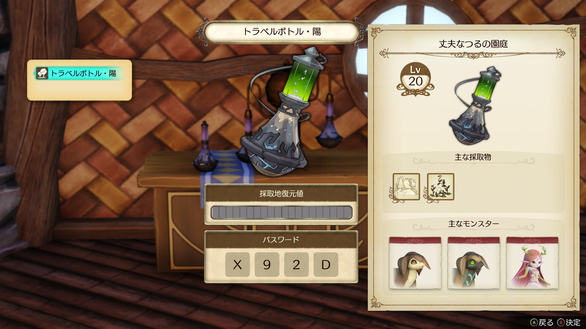
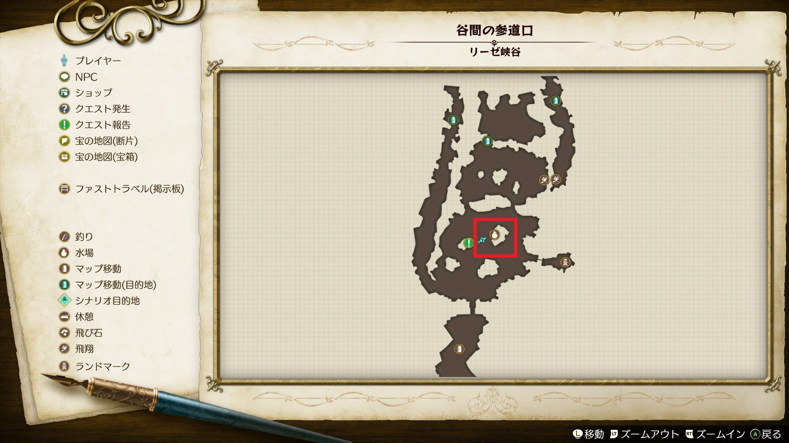
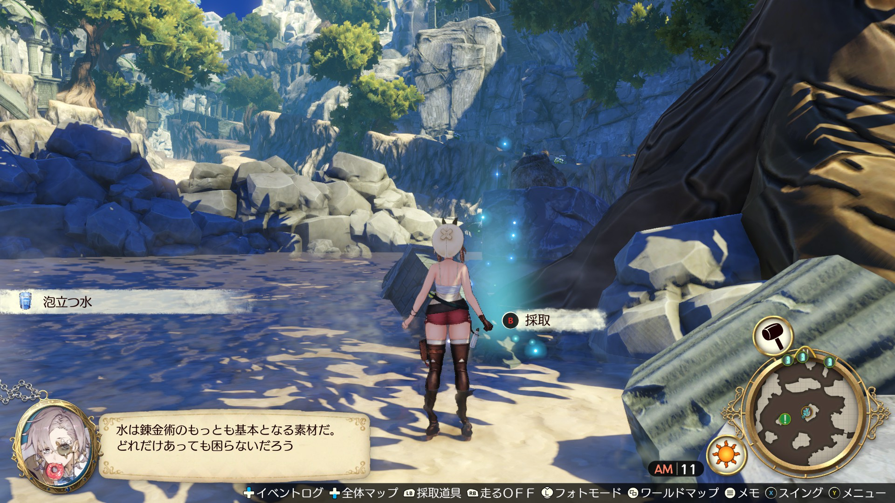

採取地調合器で X92D を入力、紙くずを集める

リーゼ峡谷の谷間の参道口から水場の採取ポイントで泡立つ水を集める



紙くずを品質順で並べ替え、 最高のものを使う

以下の特性を持つ素材を絞り込んでそれぞれ1ついれる。
（ない場合はループの回数が増えるだけなので、なくてもよい）
調合画面の下の金玉は最低素材数を示していて、満たしていれば （三）ボタンで調合開始できる

以下のように、品質上昇系の特性がついてさえいればOK


最も品質の高い泡立つ水を選択

先ほど作ったゼッテルを全て選択
（Rボタンで一括で選択できる）

品質上昇系の特性を選んでOK（特性レベルが元の3倍になる）

再びゼッテルを調合。今度は紙くずを入れた後、
右下のマテリアル環の水に、先ほど作った旅人の水珠を1つだけいれる

その上のマテリアル環の水にも1つだけ

その左上のマテリアル環の水にも1つだけ

旅人の水珠を正しく入れられていれば、全ての特性枠が開く


この調合を品質999のゼッテルができるまで繰り返す
※品質999に到達するまでに、紙くずか泡立つ水が足りなくなった場合は補充する